Project 3A: Image Warping & Mosaicing
Shooting the Pictures
I captured a few pairs of images to perform homography. I captured these images by fixing the center of projection (CoP), and rotating the camera so that there's overlap between the images.

Kitchen Image 1

Kitchen Image 2
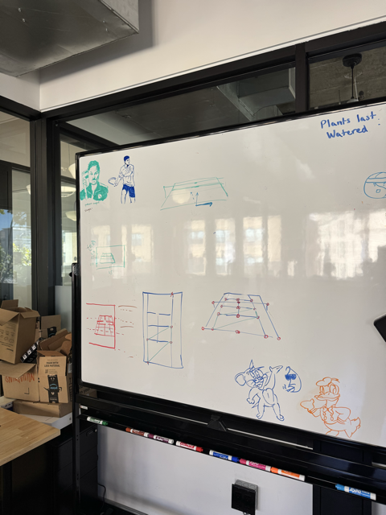
My Office Image 1
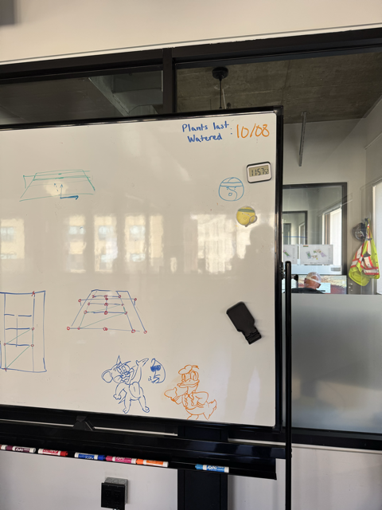
My Office Image 2
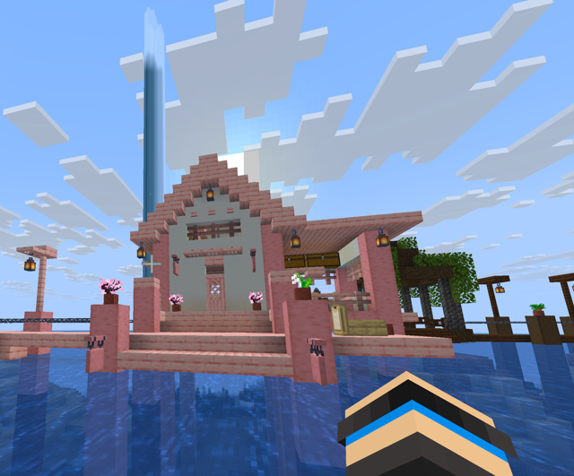
My House Image 1
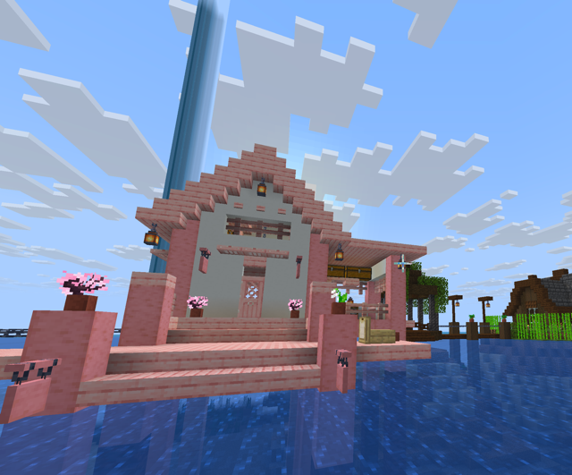
My House Image 2
Recovering Homographies
Next, we need to establish a homography matrix so we can perform projective transformation on one image to bring it to the same angle of another.
This homography matrix H essentially maps the pixels of an image to "matching" points in the other. We want to find the 3x3 matrix H with 8 degrees of freedom such that:

p' = Hp
Where p is the original point, and p' is the transformed point. Since we have 8 unknowns to solve for,
we need at least 4 point correspondences between the two images. We can use these point correspondences to solve a system of equations containing the components of H. After rearranging some terms, this defined as the following:

System of Equations
We can use this to solve for a, b, c, d, e, f, g (h=1). This solution is homogenous and can be solved with least squares if we have more than 4 points. In fact, having more than 4 point correspondences is better because we get a more accurate computation for H.
Using an online tool, I found a good amount of point correspondences for each image. Here are the images and their point correspondences.
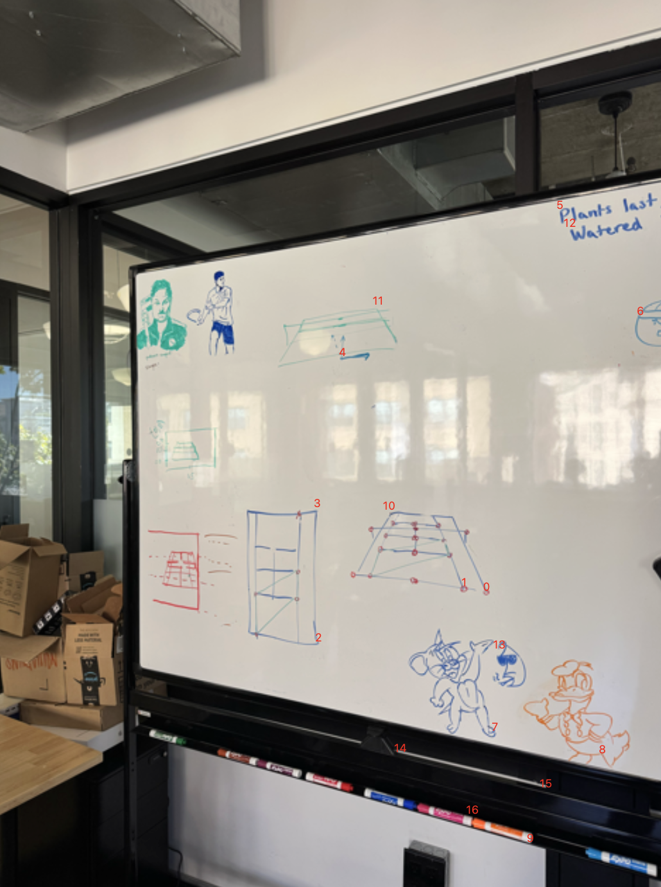
Office Image 1 Points
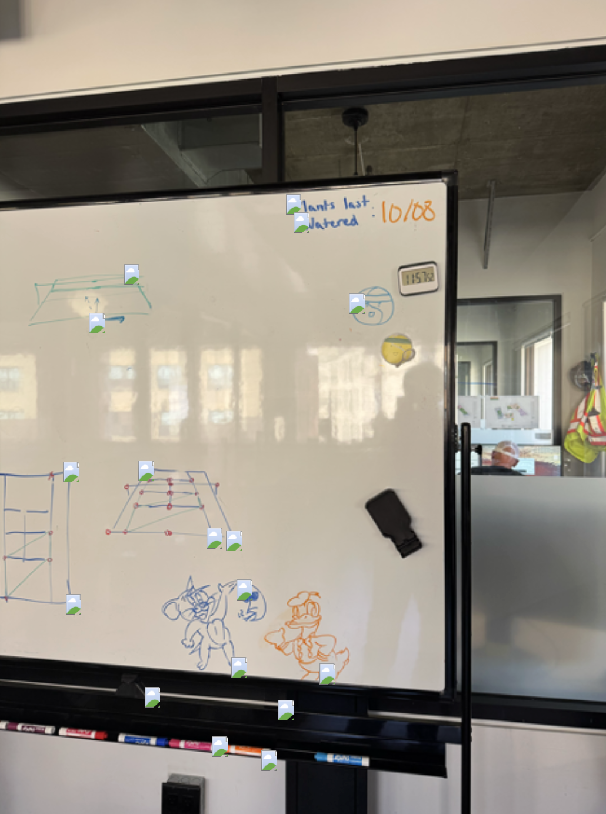
Office Image 2 Points
Here's the system of equations for the campus 1 images:
[347, 421, 1, 0, 0, 0, -63501, -77043],
[0, 0, 0, 347, 421, 1, -144699, -175557],
[331, 418, 1, 0, 0, 0, -55608, -70224],
[0, 0, 0, 331, 418, 1, -137365, -173470],
[228, 457, 1, 0, 0, 0, -13452, -26963],
[0, 0, 0, 228, 457, 1, -106248, -212962],
[227, 362, 1, 0, 0, 0, -12939, -20634],
[0, 0, 0, 227, 362, 1, -82628, -131768],
[245, 255, 1, 0, 0, 0, -18865, -19635],
[0, 0, 0, 245, 255, 1, -61005, -63495],
[399, 151, 1, 0, 0, 0, -91371, -34579],
[0, 0, 0, 399, 151, 1, -62643, -23707],
[456, 226, 1, 0, 0, 0, -126768, -62828],
[0, 0, 0, 456, 226, 1, -106704, -52884],
[353, 520, 1, 0, 0, 0, -66011, -97240],
[0, 0, 0, 353, 520, 1, -181795, -267800],
[429, 536, 1, 0, 0, 0, -109395, -136680],
[0, 0, 0, 429, 536, 1, -223080, -278720],
[378, 599, 1, 0, 0, 0, -79380, -125790],
[0, 0, 0, 378, 599, 1, -221886, -351613],
[278, 364, 1, 0, 0, 0, -31970, -41860],
[0, 0, 0, 278, 364, 1, -100914, -132132],
[270, 219, 1, 0, 0, 0, -28080, -22776],
[0, 0, 0, 270, 219, 1, -56970, -46209],
[406, 164, 1, 0, 0, 0, -95410, -38540],
[0, 0, 0, 406, 164, 1, -69426, -28044],
[356, 462, 1, 0, 0, 0, -67996, -88242],
[0, 0, 0, 356, 462, 1, -161980, -210210],
[286, 535, 1, 0, 0, 0, -34320, -64200],
[0, 0, 0, 286, 535, 1, -153868, -287830],
[389, 560, 1, 0, 0, 0, -86747, -124880],
[0, 0, 0, 389, 560, 1, -213172, -306880],
[337, 579, 1, 0, 0, 0, -57964, -99588],
[0, 0, 0, 337, 579, 1, -194112, -333504]
And here is the rounded homography matrix for the office images:
[1.4378, -0.0005, -256.4963],
[0.3123, 1.3081, -103.8915],
[0.0010, -0.000009, 1.0000]
Here are the manual point correspondences for some of the other images:
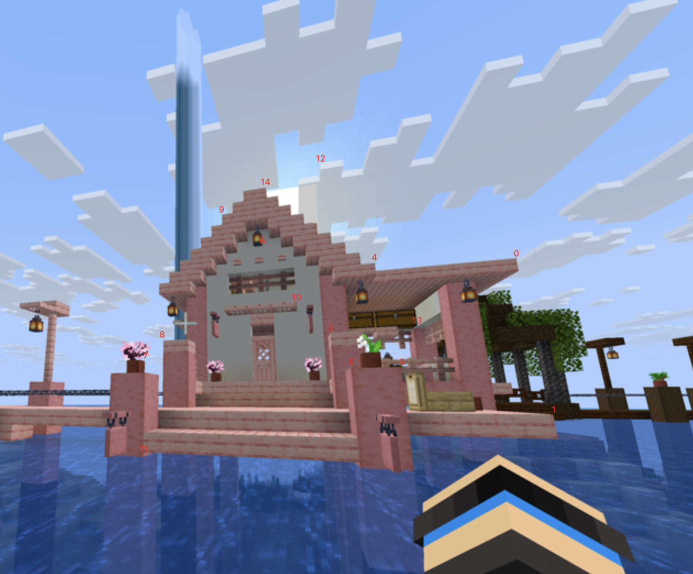
My House Image 1 Points
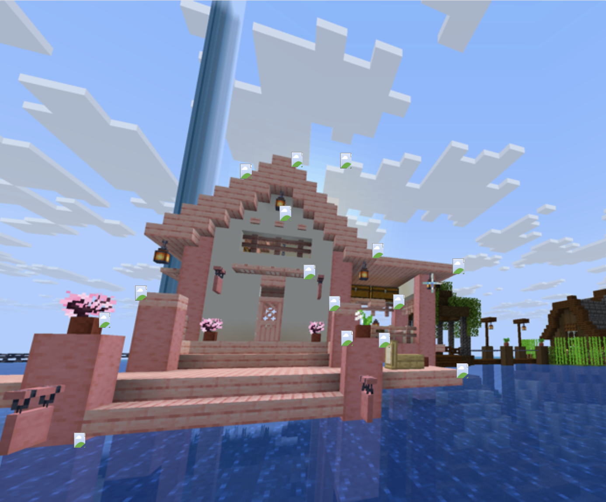
My House Image 2 Points

Kitchen Image 1 Points

Kitchen Image 2 Points
Warping Images
Now that we have a way to compute the transformation matrix H between two images, we can warp each image towards its reference/original image. To avoid holes in the output image, I used inverse warping to warp each pixel.
To decide pixel values for each of the warped pixels, I implemented two different interpolation methods:
- Nearest Neighbor Interpolation: Round coordinates to the nearest pixel value
- Bilinear Interpolation: Use weighted average of four neighboring pixels
I tried out both methods of interpolation on the first image for each pair of images. Here are the comparisons:
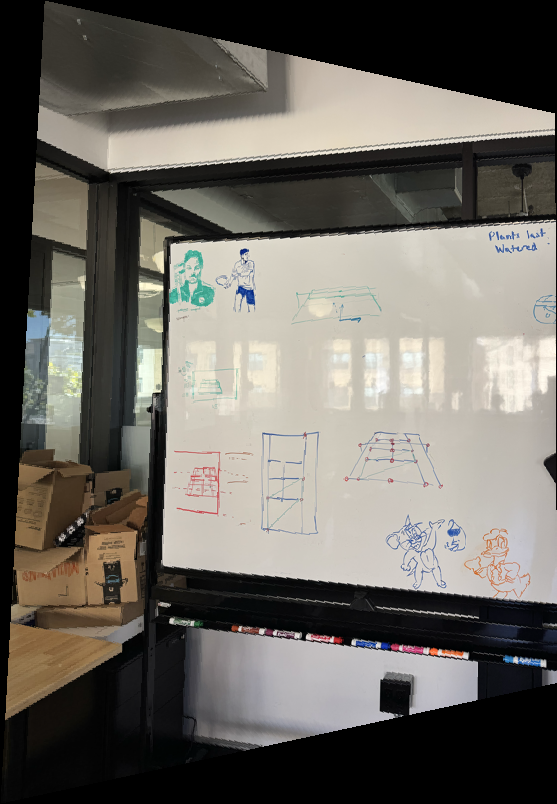
Office with Nearest Neighbor
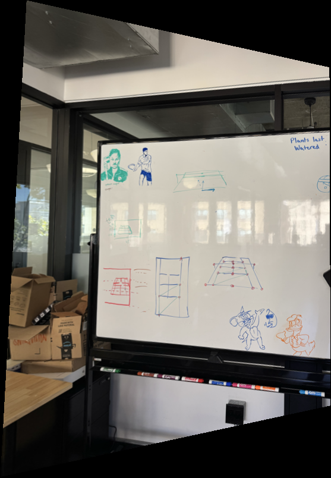
Office with Bilinear
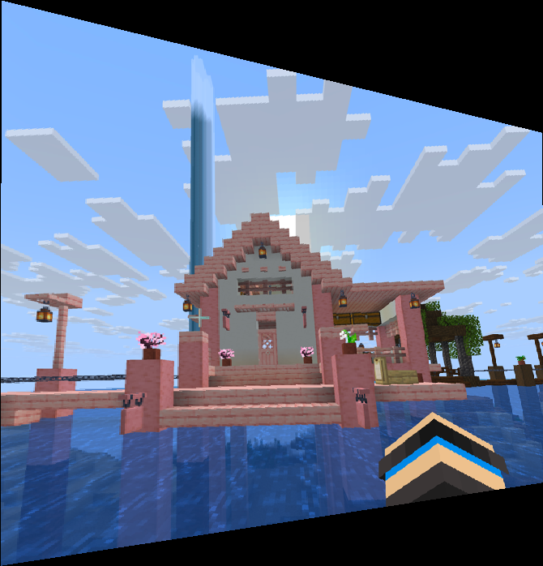
My House with Nearest Neighbor
My House with Bilinear

Kitchen with Nearest Neighbor

Kitchen with Bilinear
Both of them look pretty good! They might differ by a few pixels. The bilinear interpolation took about 2-3x longer than the nearest neighbor interpolation.
In addition, I tried out rectification by taking photos of posters or paintings from an angle, and then using homograpy to make them rectangular. Here's the results of both methods of interpolation:


Nearest Neighbor

Bilinear


Nearest Neighbor

Bilinear
Blending the Images into a Mosaic
Finally, after performing homography on images, I was able to stitch them together and blend them to create a nice mosaic. I created mosaics using all the images in the first part of this website.
For smoother blending, I used an alpha mask over the overlap between the two images. I applied a gaussian filter over the mask before combining the two images. This minimized the edges to a decent extent.
My Office Image 1
My Office Image 2
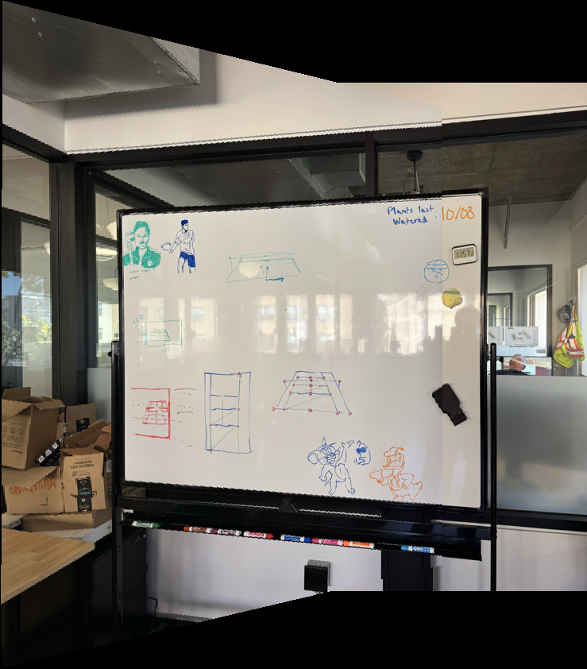
My Office Mosaic
My House Image 1
My House Image 2
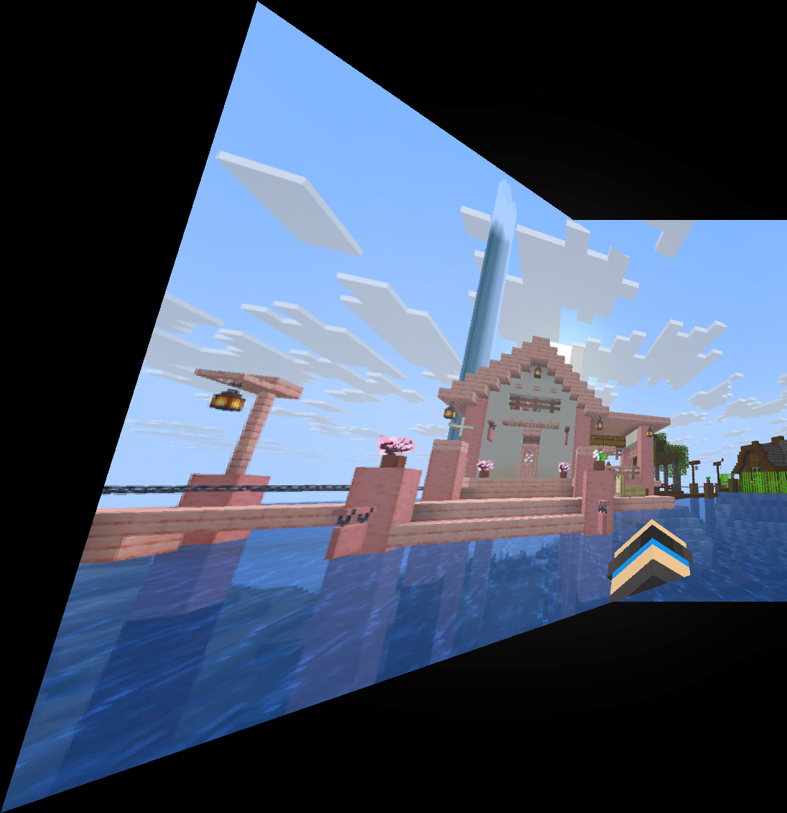
My House Mosaic
Kitchen Image 1
Kitchen Image 2

Kitchen Mosaic
Part B: Feature Matching for Autostitching
The goal of this part of the project was to create a system for
automatically stitching images into a mosaic, without having to manually
select point correspondences. I implemented code to detect features (corners),
match them between images, and compute the homography using RANSAC.
Harris Corner Detection
To detect corners in images, I used the Harris Corner Detection algorithm. This
algorithm works by looking at patches of pixels all over the image and looking for points with
change in intensity in both the x and y directions, i.e. a "corner".
Here's what the result of that looks like:
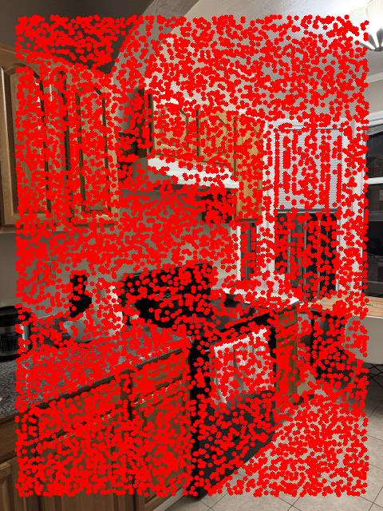
Kitchen Harris Corners
That's a lot of corners! To reduce the number of corners, I applied
Adaptive Non-Maximal Suppression (ANMS) to identify corners that are both
"strong" and evenly distributed across the image.
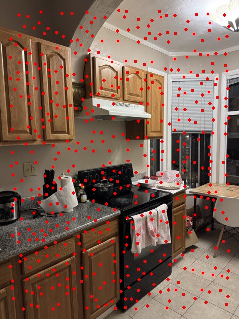
Kitchen with ANMS-selected Corners
Feature Descriptor Extraction
Next, I extracted feature descriptors for each corner from the previous step, like so:
- Blur the entire black-and-white image with a gaussian filter
- For each point, take a 40x40 window around the point
- Downsample the window to an 8x8 patch
- Bias/gain normalize each patch with its mean and SD
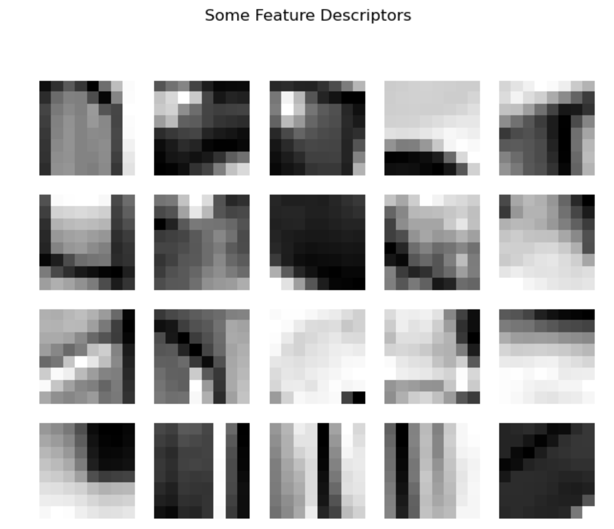
Feature Matching
Now that we have all these feature descriptors, it's time to match the descriptors
between images. That is, we need to find pairs of features that look similar and are thus likely to be good matches.
I did this by creating a K-NearestNeighbors model with the Euclidean distance metric
to find the top 2 "matches" for each point in both images. Then, I applied Lowe's
ratio test by using the ratio between the first and second nearest neighbors.
Thresholding on this ratio gave a greater amount of correct mathces.
This worked decently well! Here's the results of the matches:
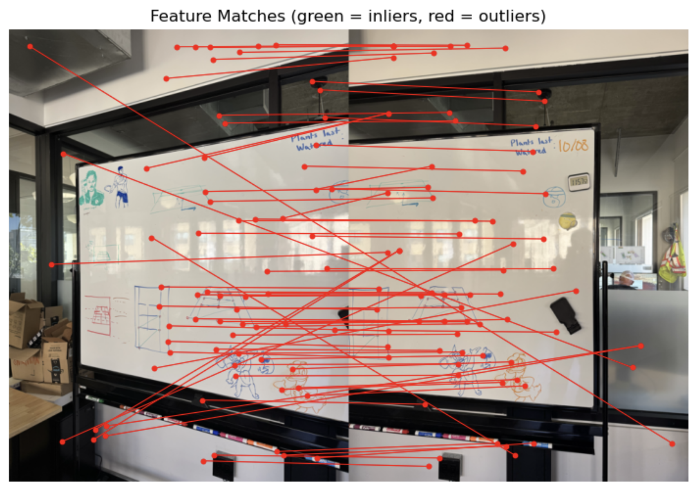
Matches for Office Images
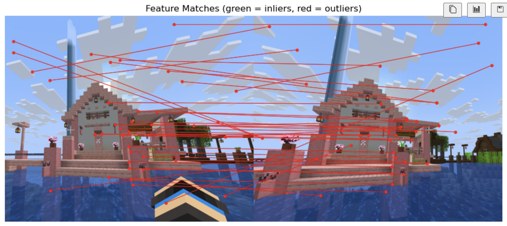
Matches for House Images
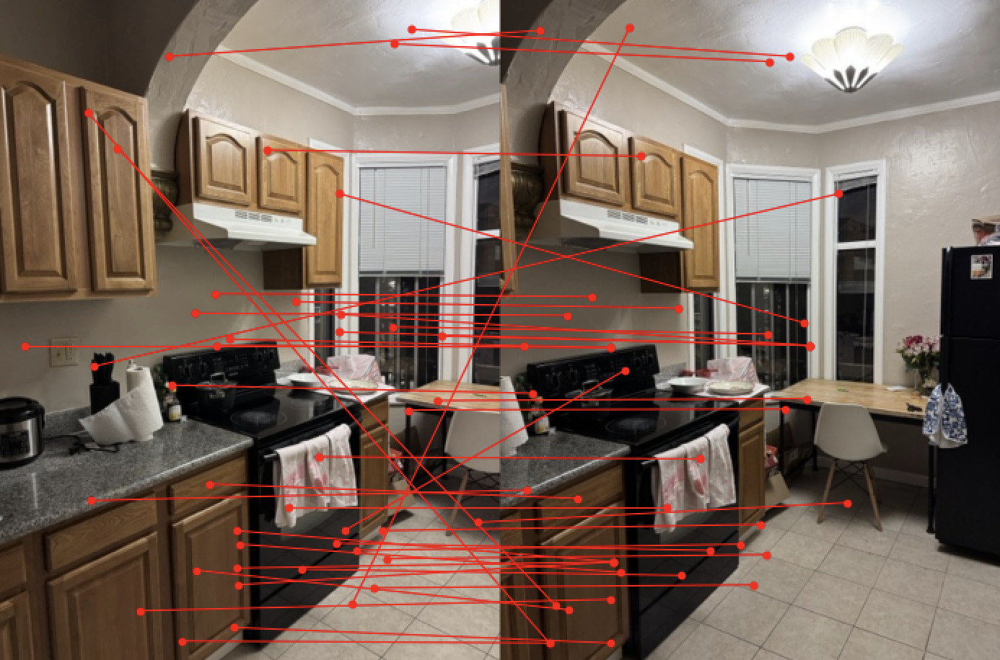
Matches for Kitchen Images
There may be a few incorrect matches, but this is a great starting point for our final step.
RANSAC for Robust Homography
The final step was to implement 4-point RANSAC (RANdom SAmple Consensus) to compute a robust homography matrix.
Basically, I repeatedly sampled 4 random matches, computed the homography matrix using those correspondences, and then counted
the number of "inliers", i.e. values within a threshold distance.
I ran this for a few thousand iterations, keeping track of the number of inliers and the best homography matrix seen so far.
This produced some great matches! The red points are for "bad" matches, and the green points are for inliers.
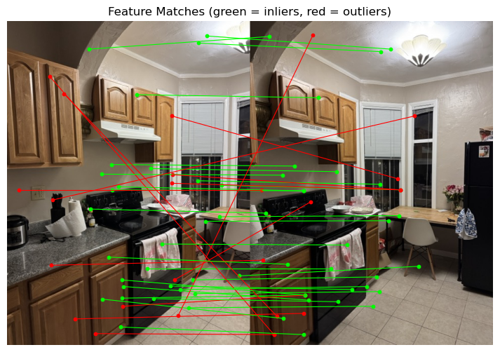
Autostitching vs Manual
Finally, let's compare how the autostiched mosaics look next to the manual ones. Using the matches and homography matrix outputted by the previous
step, I used the same method as the manual mosaics to stitch them together.
Manual Office Mosaic
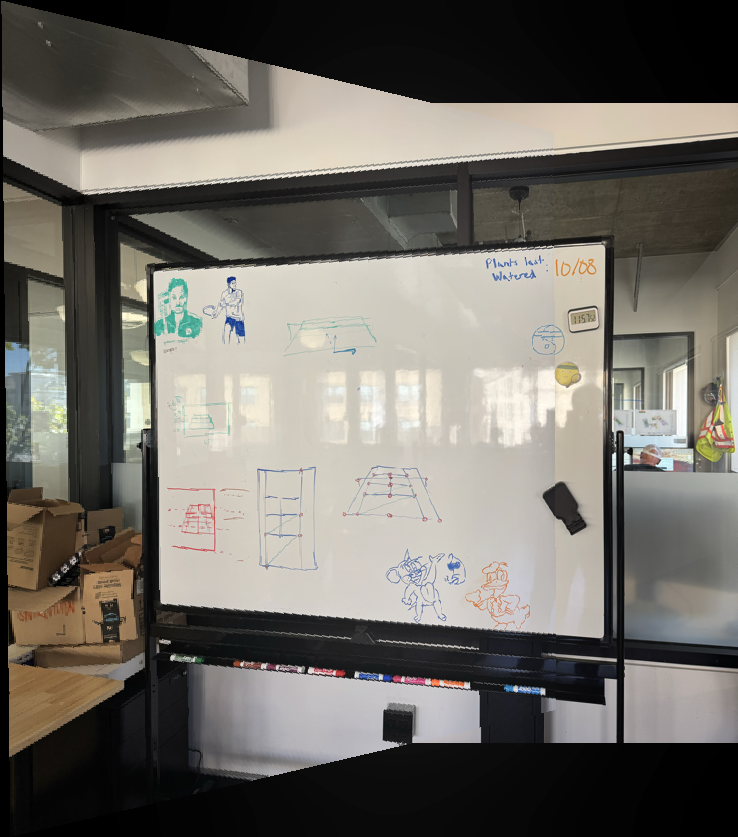
Autostitched Office Mosaic
Manual House Mosaic
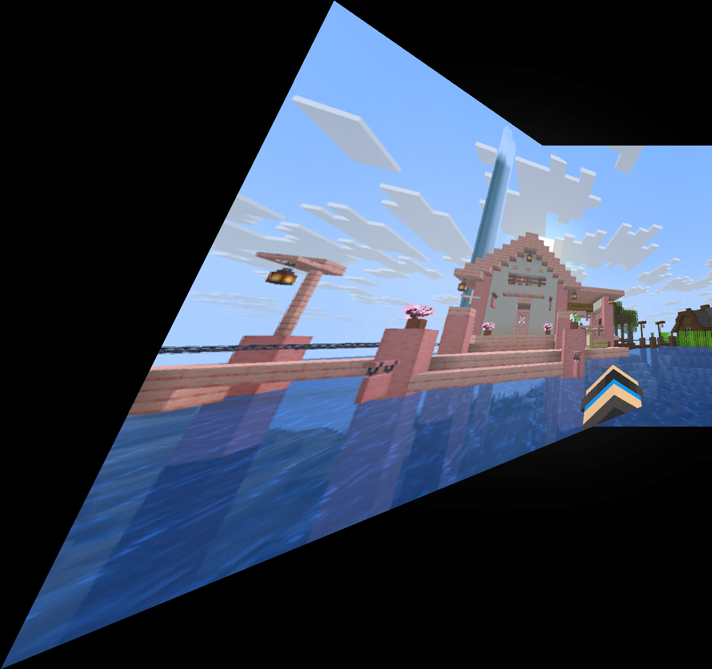
Autostitched House Mosaic
Manual Kitchen Mosaic
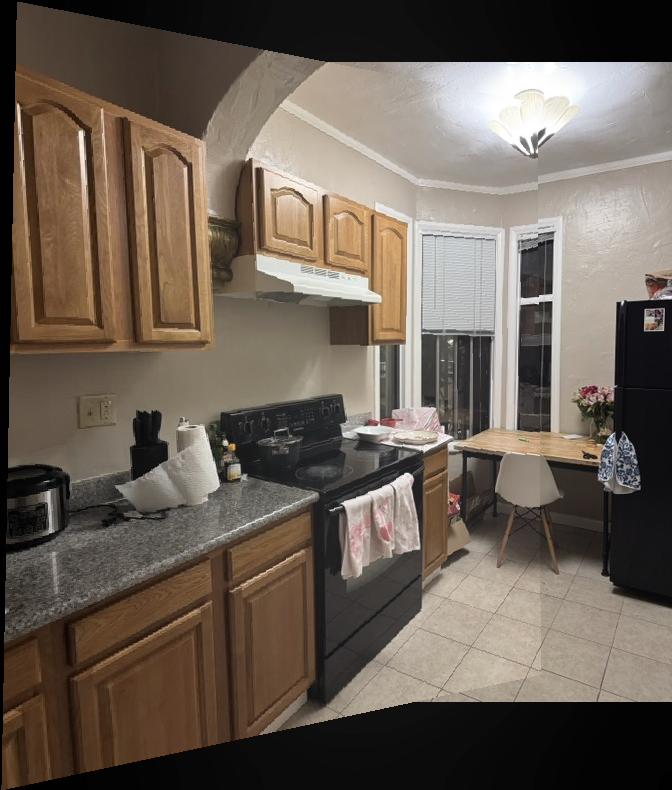
Autostitched Kitchen Mosaic